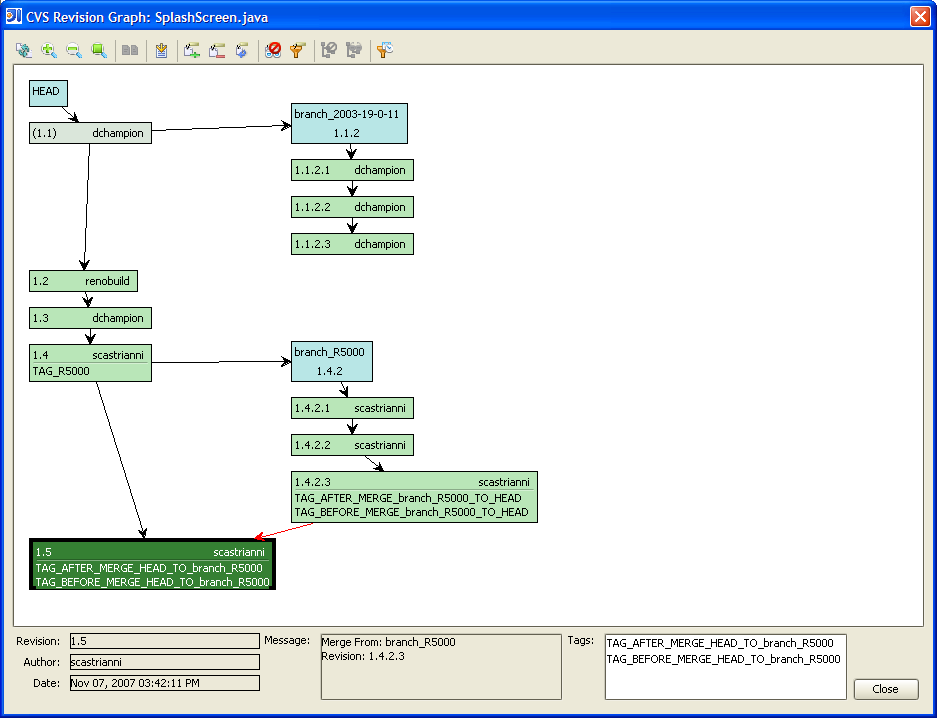

CVS Revision Graph
CVS Revision Graph is a plugin for IntelliJ IDEA 6/7 that provides the ability to render
a directed graph representation of the revision history of a file in a CVS repository.
In provides similar information to the Show History window, but in picture form.
This provides a view more easily understood as a file's revision history gets cluttered
with branching and merging. A revision graph can get large and slow to display.
Therefore, filters can be applied to help remedy this problem. The revision date
filter provides the option to filter in or out by commit date before and/or after a specified
filter date. The tag filter provides the option to control which CVS tags are
shown/hidden inside each revision node. The branch filter provides the option to filter
in or out entire parallel development lines or branches. All of these filters have
default values that can be specified in the settings dialog.
CVS does not store merge history to allow it to know which revision was merged from one
branch to another. However, if a specific commit message pattern is followed for merged
files of the form:
Merge From: [branchName]
Revision: [revisionNumber]
then the revision graph will draw red merge arrows connecting the source and target of the
merge.
Additional operations can be performed within the revision graph window to compare any two
selected revisions, to retrieve a selected revision into the active editor, and to add/remove
tags.
